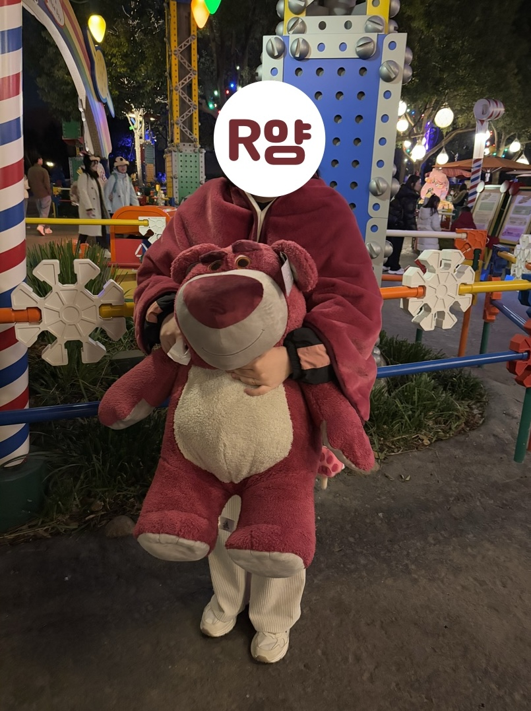
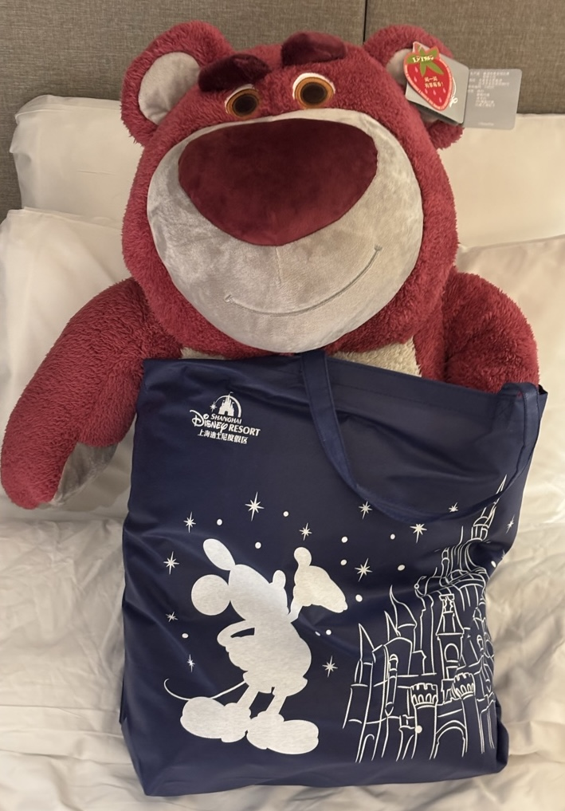
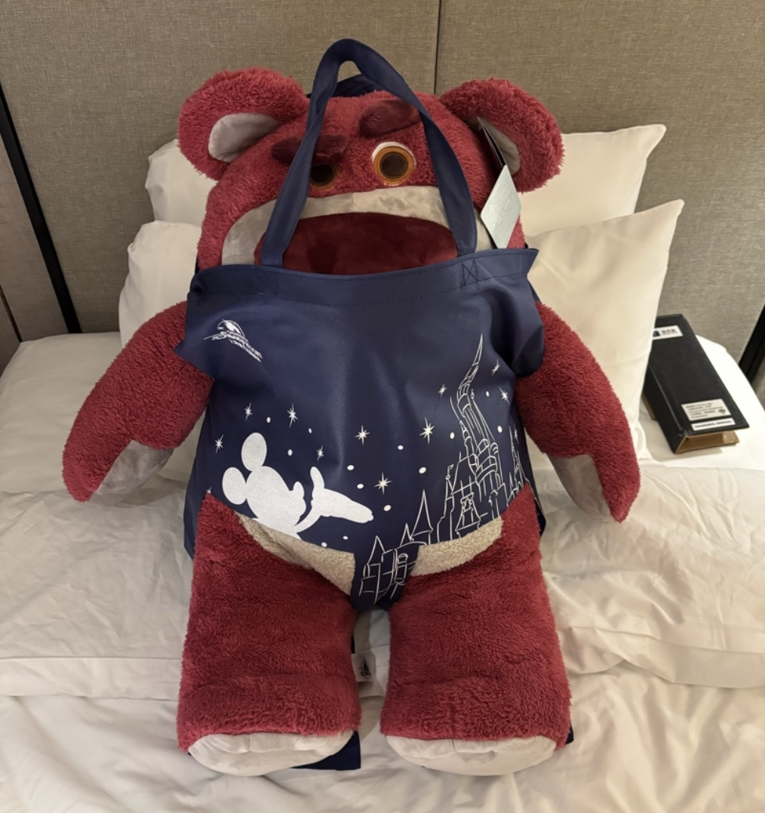
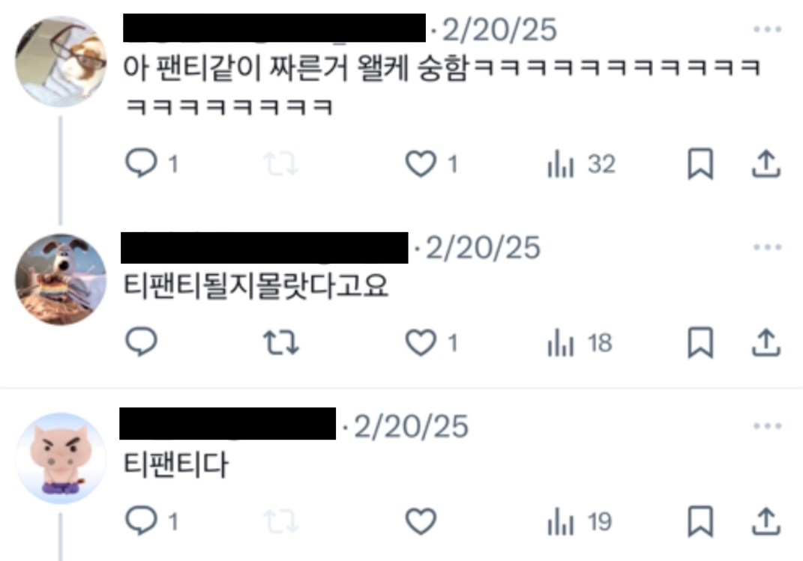

2025 상하이 여행에서 있었던 일
랏소는 토이스토리 3편에 나오는 빌런이다. 보육원의 터줏대감인 랏소는 보육원으로 가게 된 앤디의 인형들에게 텃세를 부린다. 이 영화를 볼 때만 해도 몰랐다. 랏소가 REAL LIFE에서 빌런이 될줄은…
디즈니랜드 하나만 바라보고 간 상하이 여행이었기에, 나와 친구들은 상하이에 도착하자마자 디즈니랜드로 달려갔다. 역시 꿈과 희망의 나라 답게 디즈니랜드에서 보낸 시간은 정말 즐거웠다. 렉스레이서라는 놀이기구를 타려 기다리는데 R양이 역시 자기는 무서워서 못타겠다고 했다. 그래서 J양과 나, 단 둘이 렉스레이서를 타고 R양을 다시 만나기로 했다.
렉스레이서를 타고 나와서 R양과 다시 합류하려고 연락했는데, 미니게임장에 있다고 했다. J양과 미니게임장 앞에서 기다리는데 갑자기 불안감이 엄습했다. 미니게임장에서 나오는 사람들이 하나같이 커다란 렉스 인형을 안고 나오는 것이었다. ‘R도 저걸 들고나오면 어떻게 한국에 들고가지..?’ 하고 다리를 덜덜 떨며 R양이 나오길 기다렸다. 미니게임장에서 나온 R양은 렉스 인형을 들고 있지 않았다. 렉스보다 더 커다란 랏소 인형을 들고있었다!
R양은 놀랍게도 1등상에 당첨되었던 것이다. 그리고 이것은 바야흐로 불행의 시작이었다. R양은 여행 내내 즐겁게 놀다가도 갑자기 푹 한숨을 쉬었다. 랏소를 어떻게 데려갈지만 생각하면 착잡해진다고 했다. 랏소는 내 친구를 근심 걱정에 잠기게 하는 빌런이었다.
R양은 랏소를 한국으로 데려가기 위해 큰 가방을 사러 다녔다. 왜냐하면 디즈니랜드에서 받은 쇼핑백은 랏소에게 너무 비좁았기 때문이다.
가방을 사러 떠나는 R양의 근심을 덜어주기 위해 나는, “가방 없으면 말해 내가 쇼핑백에 구멍 뚫어서 랏소를 욱여넣어줄게!” 그렇게 R양은 비장한 한 마디를 남기고 떠났다. “가방 못 사면 카톡할게, 바로 쇼핑백 찢어.”
그렇게 나는 랏소를 위해 쇼핑백에 다리 2개, 팔 2개, 그리고 꼬리 1개. 총 5개의 구멍을 내는 수술을 무면허로 집도하게 되었고,
무면허로 집도된 내 인생 첫 수술은 타고난 손재주로 성공적으로 마무리되었다. 그러나…
인과응보라 했던가, 토이스토리에서 랏소는 쓰레기장의 자동차 앞에 매달려 영원히 벌레를 맞게 되는 비참한 말로를 맞이했듯이, 내 친구의 랏소 역시 티팬티를 입었다는 놀림을 당하는 비참한 말로를 맞이했다.
